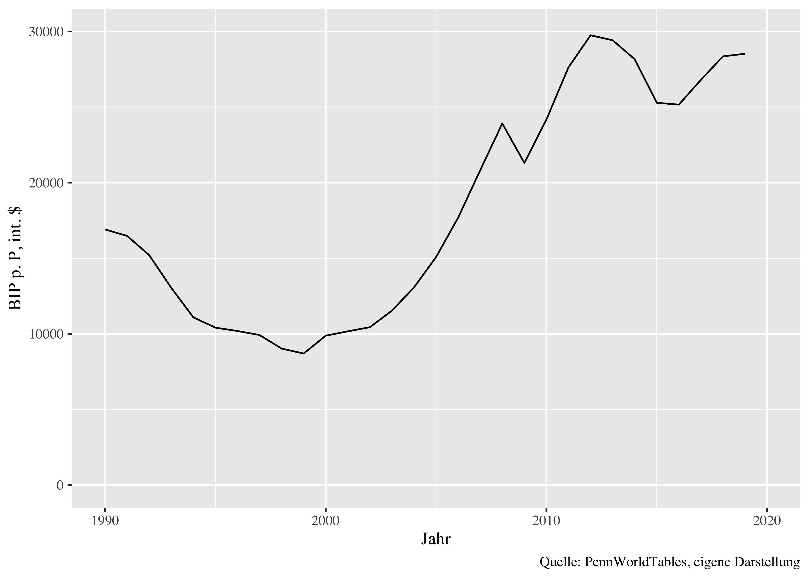
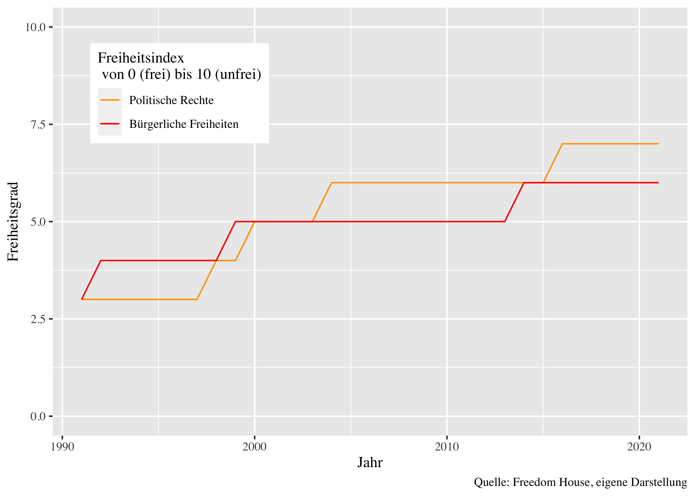

Russland und der Weg zur Knechtschaft
Eine totalitarismuskritische Analyse aus hayekianischer Sicht
Einleitung
Der Einmarsch Russlands in die Ukraine am 24. Februar 2022 hat die westliche Welt unvorbereitet getroffen. Viele Beobachter und Politiker äußerten ein Unverständnis über die aus ihrer Sicht irrationale Entscheidung Putins, in der Ukraine völkerrechtswidrig einzumarschieren. Um zu verstehen, wie es soweit kommen konnte, dass ein Herrscher die Notwendigkeit sieht, ein anderes Land anzugreifen, muss zuerst die derzeitige politische, ökonomische und gesellschaftliche Lage in Russland analysiert werden.
Ein wichtiger Denker, der sich insbesondere mit der Entwicklung von Demokratien hin zu totalitären Systemen beschäftigt hat, ist Friedrich August von Hayek. Daher bietet es sich an, seine Denkweise und Ansichten in Bezug auf das heutige Russland zu untersuchen. Es wird interessant sein zu sehen, wie Hayek das aktuelle politische und wirtschaftliche Klima in Russland einschätzen und charakterisieren würde.
Begonnen wird mit einer Einführung in Hayeks Denkweise, insbesondere seines Hauptwerks “Road to Serfdom”. Darauf folgt ein Blick auf Russland aus hayekianischer Sicht, wobei insbesondere vier Charakteristika des Systems analysiert werden. Anschließend wird in Kapitel 3 eine kurze Entwicklungsgeschichte Russlands mit Blick auf die analysierten Sachverhalte erläutert, bevor im Fazit resümiert wird.
1 Hayeks Denkweise
F.A. Hayek hat sich insbesondere mit der Ordnung von Gesellschaften beschäftigt, insbesondere ihrem wirtschaftlichem System und dem darin enthaltenen Wissen. Er war ein starker Verfechter des freien Marktes und glaubte, dass eine Ordnung, die auf individueller Freiheit und Wettbewerb basiert, eine Gesellschaft am besten fördert.
Sein Hauptwerk “Road to Serfdom” wurde 1944 in London1 und 1945 in einer Kurzfassung im Readers Digest veröffentlicht2 und handelt von den Träumen vieler Intellektueller nach einer Fortführung der Planwirtschaft nach Kriegsende. Unter dem Stichwort “Planning for a free society” waren damals viele überzeugt, dass Kollektivismus eine Voraussetzung für ein sozial gerechtes Wirtschaftssystem ist.
Dieser Haltung stellt er sich entschieden entgegen, mit dem Argument, dass staatliche Planwirtschaft eine unweigerliche Bewegung in den Totalitarismus ist. Geprägt war er dabei besonders von seinem Blick auf Nazideutschland und die Sowjetunion.
Aufgrund der Verteilung von Wissen auf alle Individuen einer Gesellschaft und dem Aussetzen des Marktmechanismus als effizienteste Methode der Koordination wird ein Plan nur funktionieren, solange es eine gemeinsame Moralvorstellung gibt. Diese gemeinsame Moralvorstellung kann nur von einem “starken Mann” durchgesetzt werden, der dafür eine gemeinsame Ideologie erschaffen muss, welche zwangsläufig von einem totalitären Staat durchgesetzt wird.
2 Blick auf heutiges Russland
In diesem Abschnitt wird untersucht, wie Hayeks Ansichten auf die heutige politische, ökonomische und gesellschaftliche Lage in Russland angewendet werden können und wie sie dazu beitragen können, das Verständnis für die aktuellen Herausforderungen und Entwicklungen in dem Land zu vertiefen. Besonderer Wert wird dabei auf den Wettbewerb, die Oligarchie, der Wert von Sozialer Gerechtigkeit und die Einschränkung der Freiheit durch Ideologie gelegt.
2.1 Staatlicher Wettbewerb
The sum of information reflected or precipitated in the prices is wholly the product of competition3
3 Hayek (1976) S.68
Hayeks Verständnis der Wirtschaft und des Marktes ist geprägt von der Charakteriesierung als eine spontane Ordnung von großen Gesellschaften. Er beschreibt es als eine Katallaxie, ein chaotisches System, als die Ordnung “brought about by the mutual adjustment of many individual economies in a market”4. Der Markt ist also eine Institution für die Koordination verteilten Wissens zwischen Individuen. Staatliche Eingriffe in diese Institution, insbesondere in den Preismechanismus, führen zu Reibungs- und Informationsverlusten und behindern somit die effiziente Allokation.
4 Hayek (1976) S.108
Die russische Ökonomie kann man trotz der starken Liberalisierungen nach dem Zusammenbruch der Sowjetunion als Staatskapitalismus beschreiben5. Sie ist von großen staatlichen Unternehmen (State Owned Enterprise, SOE) geprägt, insbesondere in den als strategisch wichtig angesehenen Sektoren wie Öl, Gas und Rohstoffen.
Diese SOEs haben durch die vergleichsweise billige Förderung und hohen Verkaufspreise eine extrem hohe Profitmarge, von der insbesondere der Staatshaushalt zur Finanzierung abhängt. Durch die sehr hohe Dependenz der gesamten Wirtschaft von diesen Unternehmen ist die Ausbildung einer wettbewerbsfähigen Industrie fast gar nicht geschehen und die Ökonomie ist zu einer Art statischen Wirtschaft verkommen6. Die Ineffizienz dieser Unternehmen im Vergleich zur Privatwirtschaft ist enorm.
Verdeutlichen lässt sich die Entwicklung des Kapitalismus in Russland am Beispiel Gazprom. Nach einer anfänglichen Privatisierung als Aktienkonzern in den 90ern wurde er zu Beginn der 2000er nach Putins Inauguration schnell staatlich kontrolliert, in dem die Sitze im Aufsichtsrat neu verteilt wurden. Besetzt wurde sie vor allem mit Vertrauten des Kremls, welcher heute 51% der Anteile hält7 und von den hohen Einnahmen durch Dividenden als auch Steuereinnahmen extrem profitiert.
7 Rothacher (2021) S.86f
Betitelt werden diese staatlichen Großunternehmen als “national champions”, die Vladimir Putin in seiner Dissertation bereits beschrieben hat8. Sie sollen neben ihrer Profiterwirtschaftung auch politische Interessen auf internationaler Ebene voranbringen und durch ihre Größe und Stärke im internationalen Wettbewerb bestehen. Dafür wurden sie durch Eintrittsbarrieren insbesondere gegenüber westlichen Firmen geschützt und als Monopole oder Duopole aufgebaut.
2.2 Rent Seeking und Oligarchie
Who will deny that a world in which the wealthy are powerful is still a better world than one in which only the already powerful can acquire wealth?9
9 Hayek (1944) S.137
Diese Einschränkung des Wettbewerbs schafft natürlich Begehrlichkeiten. Hayek beschreibt diesen Prozess als “aspiring monopolists regularly seek the assistance of the state to make their control effective”10. In der neueren Literatur wird dieser Prozess, dass Interessengruppen politische Maßnahmen ersuchen, als Rent Seeking11 beschrieben. Wenn zu diesem Erschleichen von Renten dann noch eine Verquickung mit politischer Macht hinzukommt, ist man in einem oligarchischem System angekommen, welches extrem ineffizient ist.
10 Hayek (1945) S.60
In Russland ist das wirtschaftliche System sehr stark von oligarchischen Strukturen beherrscht. Insbesondere Vladimir Putin installierte seit Beginn der 2000er viele seiner Bekannten aus Sicherheitskreisen, den sogenannten siloviki, an wichtigen Positionen staatlicher und privater Unternehmen und sicherte sich so eine immense Macht.
Verdeutlichen lässt sich auch das am Beispiel Gazprom, wo nach der Übernahme des Kremls ein enger Vertrauter Putins aus seiner Petersburger Zeit den Vorstandsvorsitz übernahm und die staatliche Kontrolle sicherte. Außerdem verhinderte er eine Aufspaltung des Unternehmens in mehrere Wettbewerber und eine Konzentrierung des Unternehmens auf das Kerngeschäft12.
So war beispielsweise der Verkauf von Erdgas nach Osteuropa über Mittelsmänner und Unternehmen organisiert, deren Existenz eigentlich überflüssig war, die den beteiligten Parteien aber als eine lukrative Einnahmequelle für Rent Seeking und politische Finanzierung diente. Beispielhaft dafür ist das mit dem Gasverkauf an die Ukraine beauftragte Unternehmen RosUkrEnergo, das zu billigen Preisen Gazprom-Gas gekauft hat und in der Ukraine zu Weltmarktpreisen weiterverkaufte und als Geldquelle für Bereicherung der Beteiligten diente13.
All diese Prozesse führen dazu, dass die russiche Wirtschaft in ihrer Entwicklung stark beeinträchtigt wurde, da sie nur auf Rent-Seeking bei den politischen Machthabern ausgerichtet war und innovative Unternehmen ohne Verbindungen zur Politik keine Möglichkeit haben, sich zu entfalten.
2.3 Soziale Gerechtigkeit
The demand for ‘social justice’ is addressed not to the individual but to society, yet society, […], is incapable of acting for a specific purpose14
14 Hayek (1976) S.64
Die aufgeführten Problematiken und die daraus entstehende Ungleichheit führen in der russischen Gesellschaft zu Rufen nach mehr sozialer Gerechtigkeit. Das ist eine Tendenz, die schon Hayek beobachtet und kritisiert hat. Er argumentiert dabei nicht gegen Gerechtigkeit an sich, sondern dass sie oft über Markteingriffe herbeigeführt werden soll.
Das Problem an diesem “planning designed to protect individuals or groups against diminutions of their incomes”15 ist, dass dadurch der Aufbau neuer kompetitiver Sektoren und das Verschwinden der alten Sektoren verhindert wird. Die Entstehung einer dynamischen Volkswirtschaft wird dadurch erschwert.
15 Hayek (1945) S.60
In Russland herrscht aufgrund der Ungleichheit das politische Versprechen auf Gerechtigkeit, trotz der katastrophalen Lage des Wirtschaftssystems. Insbesondere eine Gruppe liegt dabei im Fokus, die Pensionäre und Rentner. Kurz vor jeder Wahl seit 2000 wurde ihre Rente erhöht und neuerdings an die Inflation gekoppelt, ohne Rücksicht auf Lohnentwicklung in der arbeitenden Bevölkerung16. Das ging während der Zeiten hoher Gaspreise bis 2015 gut, seitdem wird die Finanzierung dieser Wahlgeschenke schwieriger und Erhöhungen wurden teilweise ausgesetzt.
2.4 Ideologie und Sündenböcke
It seems to be easier for people to agree on a negative programme – on the hatred of an enemy, on the envy of the better off17
17 Hayek (1945) S.53
Um als Herrscher in Zeiten von Unzufriedenheit aufgrund von Korruption und schlechter Wirtschaftslage an der Macht zu bleiben, muss man die Bevölkerung auf ein gemeinsames Ziel verschwören. Hayek beschreibt diese Ideologie als über ein negatives Programm definiert, meist die Ablehnung von dem Anderen, dem Feind. In Deutschland war das bei Erscheinen von Road to Serfdom die “Juden” und in Russland die “Kulaken”, die wohlhabenden Bauern. Über die gemeinsame Abneigung wurde eine uniforme Masse geschaffen, die hinter dem staatlichen Programm steht.
Auch heute wird in Russland von staatlicher Seite wieder ein Sündenbock definiert, der dekadente Westen, der die russische Nation mit liberalen Ideen wie Homosexualität “unterläuft”. Die russische Mehrheitsgesellschaft soll dabei gegen die LGBTQ-Minderheit im eigenen Land aufgebracht werden, welche die “traditionelle russische Ehe” angreift18. Bereits 2013 wurde ein Gesetz auf dem Weg gebracht, welches “Homosexuelle Propaganda” verbietet, und 2022 noch einmal stark ausgeweitet19.
Eingebettet ist diese Fixierung auf einen Sündenbock in die generelle Rückkehr einer staatlichen Ideologie, insbesondere mithilfe der Anpassung der Geschichte20. Vladimir Putin sieht den Untergang der Sowjetunion als größte Katastrophe des 20. Jahrhunderts und als Verlust von 1000 Jahren russischer Macht und Geschichte21 und forciert eine Rückkehr eines russischen imperialen Großreichs, um an vergangenen Ruhm anzuschließen.
3 Der Weg zur Knechtschaft
Der russische Weg zur Knechtschaft scheint also eine andere Beschaffenheit haben als der prototypische Weg, den Hayek beschreibt. Entstanden ist er aus Reformen, die die russische Bevölkerung nach dem Zusammenbruch der Sowjetunion eigentlich freier machen sollten.

Doch nach 1990 kam es zu erheblichen Verlusten des Lebensstandards der breiten Bevölkerung (siehe Abbildung 122), unter anderem aufgrund der gescheiterten Reformpolitik und Korruption in der Jelzin-Ära. Die Reaktion darauf waren verstärkte Rufe nach Gerechtigkeit und einer starken Führungsperson in der Politik. Die Antwort darauf war Vladimir Putin, der explizit mit der Idee eines starken Staates in den Wahlkampf ging, nachdem er in Tschetschenien den Aufstand niedergeschlagen hatte und sich dadurch Popularität erarbeitete23.

Nach seiner Wahl als Präsident fing er an, sein eigenes Wirtschaftsprogramm umzusetzen. Das beinhaltet die “nationalen Champions” im Rohstoffsektor, die staatliche Schaffung von Monopolen, aber mit dem Versprechen von sozialem und wirtschaftlichem Aufstieg. Und während des Rohstoffbooms kann er dieses Versprechen auch einhalten. Der Lebensstandard steigt, gleichzeitig aber auch die Beschränkung der politischen Rechte und Freiheiten (siehe Abbildung 224). Man könnte es als eine Art autoritären Gesellschaftsvertrag interpretieren, wenig politische Partizipation gegen Wohlstand. Das gesamte Wirtschaftswachstum- und Gesellschaftsmodell wird von Beobachtern teilweise mit dem Namen “Putinomics”25 beschrieben, da es eine ganz eigene Spielart des Kapitalismus ist.
Dieser Gesellschaftsvertrag funktioniert jedoch nur während des Rohstoffbooms der 2000er und Anfang der 2010er Jahre. Nach 2012 ist die immense Subventionierung der Wirtschaft durch Rohstoffeinnahmen aufgrund gesunkener Preise nicht mehr möglich, und bei Putins Antritt zur dritten Amtszeit kommt es zu den größten zivilgesellschaftlichen Protesten im modernen Russland. Die Reaktion der Regierung darauf ist eine Niederschlagung der Proteste und eine verstärkte Machtkonzentration und Freiheitseinschränkung, um der Unzufriedenheit entgegenzuwirken.
Um vom Versagen im eigenen Land abzulenken, wird auch erstmals eine Art von gemeinsamer nationaler Ideologie definiert. Von der Ablehnung von Homosexualität bis zum ersten völkerrechtswidrigen Einmarsch in der Ukraine 2014 und die Schuldzuschreibung an den “dekadenten Westen” wird dieser erstmals als Feind definiert. In den nächsten Jahren ist auch kein weiterer Wille zum Umbau der Wirtschaft zu erkennen, und die autoritären Repressionen werden immer stärker (siehe Abbildung 2), da keine ökonomischen Erfolge vorzuweisen sind.
2020 wird dann mit einer weitreichenden Verfassungsreform der erste Grundstein gelegt für eine Langzeitherrschaft Putins, der damit bis 2036 an der Macht bleiben könnte. Neben der Schwächung der Gewaltenteilung und neuen Befugnissen für den Präsidenten umfasst die Reform aber auch weitreichende soziale Versprechen als Gegenleistung für die Bevölkerung. Der Mindestlohn darf verfassungsrechtlich eine Grenze nicht mehr unterschreiten und alle Sozialbezüge werden inflationsindiziert. Nebenbei werden ideologische Elemente inkorporiert, beispielsweise wird das “Lügen” über die sowjetische Geschichte unter Strafe gestellt und die russische Ethnie als staatstragend definiert26.
Weitergeführt wird der Weg in den Totalitarismus dann 2022 mit dem völkerrechtswidrigen Einmarsch in der Ukraine. Die sogenannte “Spezialoperation”, die nicht einmal Krieg genannt werden darf, soll angeblich die Ukraine entnazifizieren und wird oft mit dem “Großen Vaterländischen Krieg”, dem 2. Weltkrieg, gleichgesetzt. Die Kriegspropaganda, wie das allgegenwärtige russische Z, soll die Bevölkerung für die Kriegsaufgabe mobilisieren und Rekruten für die Armee generieren. Es ist also gewissermaßen ein Umschwung vom autoritären System mit wenig Partizipation zu einem totalitären System, in dem die Bevölkerung für ein gemeinsames Ziel motiviert werden soll. Von ehemaligen Duma-Abgeordneten wird der derzeitige Weg Russlands auch bereits als “Weg in den Totalitarismus” bezeichnet27.
Die Zukunft wird vermutlich auch noch weiter in diese Richtung weisen. Mit dem Krieg einher geht auch verstärkt eine Kriegswirtschaft und stärkere Planung von der Zentralregierung. Neue Gesetzespakete greifen bereits in die wirtschaftliche Freiheit ein, mit dem direkten Einfluss auf Arbeitszeiten von Arbeitern in “wichtigen” Sektoren und Lieferverpflichtungen von Rüstungsmaterialien an die Armee und bringen somit die Planwirtschaft in Teilen wieder zurück28. Auch die Propaganda nimmt aufgrund der Misserfolge in der Ukraine zu, um weitere Rekruten für die Armee zu mobilisieren.
Fazit
Die Analyse der jüngeren russischen Geschichte aus Hayeks Blickwinkel erlaubt einem, die Entwicklungslinien des politischen und wirtschaftlichen Systems zu verstehen. Der heutige Stand von wirtschaftlichen und bürgerlichen Freiheiten lässt sich als direkte Folge der staatlichen Eingriffe in die Marktwirtschaft und das politische System in der Vergangenheit interpretieren und so auch die Zukunft prognostizieren.
In Anbetracht der Ideen und Argumente von Hayek ist es wahrscheinlich, dass er die gegenwärtige Lage Russlands kritisch sehen würde. Insbesondere der Staatskapitalismus und der schrittweise Weg in den Totalitarismus würde ihm vermutlich auffallen und von ihm kritisiert werden.
Diese Kritik wäre in der Vergangenheit bitter nötig gewesen. Insbesondere die fehlende westliche Bereitschaft, auch nach vielen Verstößen Russlands gegen die internationale Ordnung, wie beispielsweise der Einmarsch in der Ostukraine 2014, verschiedene Handlungsoptionen auszuloten, ist fragwürdig.
Beispielsweise das blinde Vertrauen in Gazprom und russische Gaslieferungen im Allgemeinen wäre durch eine Analyse der Wirtschaftsstruktur im Sinne Hayek’s vermutlich weniger stark gewesen. In Anbetracht der Tatsache, dass die Verquickung von politischer und wirtschaftlicher Macht im russischen System schon länger offenbart war, hätten so wirtschaftspolitische Entscheidungen wie der Verkauf des größten deutschen Gasspeichers in Rehden an Gazprom29 verhindert werden können.
Insgesamt kann man sagen, dass die Entwicklung Russlands auf dem Weg in den Totalitarismus, der heute zutageliegt, aus hayekianischer Sicht absehbar war und ein früheres Einsetzen für die weitere Demokratisierung und Liberalisierung in den 2000ern dringend nötig gewesen wäre. Die Theorie des Wegs zur Knechtschaft lässt sich am Beispiel der Russischen Förderation gut analysieren und sie zeigt, dass sie noch eine Relevanz hat.
Nichtsdestotrotz gibt es Punkte, an denen Hayeks Analysen nicht zum realen Verlauf der Totalisierung passen. Er sieht in seiner Systemanalyse zwei Kategorien, anhand derer man ein System analysieren kann. Einerseits, wie die Macht verteilt ist, auf einzelne (Autoritarismus) oder viele (Demokratie). Andererseits, wie viel Macht für staatliche Eingriffe die Machthaber haben, ob wenig (Liberalismus) oder viel (Totalitarismus).
Er selbst sagt dann, dass er “einen liberalen Diktator einer demokratischen Regierung der es an Liberalismus mangelt”30, vorzieht, da man in einem solchen System besser gegen Totalitarismus abgesichert ist. Abgesehen davon, dass er das im Kontext der chilenischen Diktatur unter Augusto Pinochet gesagt hat, welche für mindestens 27.255 politische Gefangene verantwortlich war, von denen 94% gefoltert wurden31, zeigt sich hier eine Demokratieskepsis von Hayek und eine Befürwortung eines autoritären Systems im Sinne des Liberalismus.
Der russische Fall zeigt jedoch, dass der Autoritarismus unter Vladimir Putin erst den Grundstein für das totalitäre System gelegt hat. Die Konzentration der Macht auf eine kleine politische Elite erlaubte Putin, schrittweise seine staatlichen Eingriffe auszubauen und zu sichern. Eine funktionierende Demokratie, die Russland nie hatte, hätte eine Absicherung gegen diesen Totalitarismus sein können. Das steht im Gegensatz zum Denken Hayeks, und ich denke dass er sich hier geirrt hat.
Ungeachtet dessen ist Hayeks Analyse trotzdem eine wertvolle zur Betrachtung der Entwicklung Russlands im 21. Jahrhundert und kann viele Ergebnisse der Entwicklung des russischen Systems erklären. Der Krieg in der Ukraine ist die Schlussfolgerung eines Herrschers, der die Bevölkerung seines Landes einem totalitären System unterjochen will und bereit ist, dafür das Völkerrecht zu brechen. Durch den Krieg, beziehungsweise die “Spezialoperation”, wird eine uniforme Gesellschaft erschaffen, die widerstandslos bei einem gemeinsamen Ziel mitmachen soll.
An diesem Punkt ist Russland angelangt, da es sein Wirtschafts- und Gesellschaftsystem nicht mit sinnvollen Institutionen aufgebaut hat, sondern durch Markteingriffe die Planung bevorzugt hat. Die folgenden Schritte führten immer weiter in den Abgrund und unter dem starken Anführer Putin verwandelte sich Russland in ein totalitäres System.